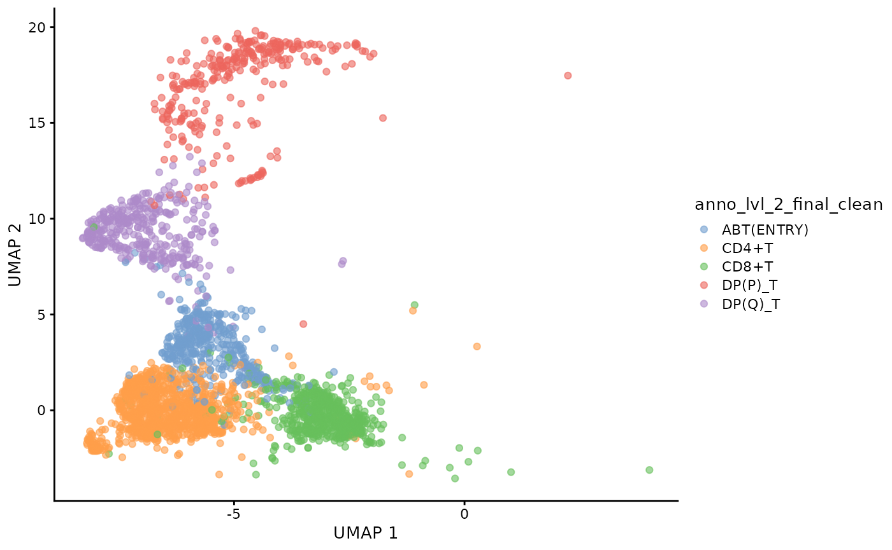
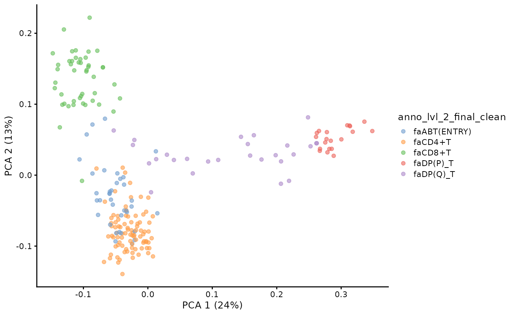
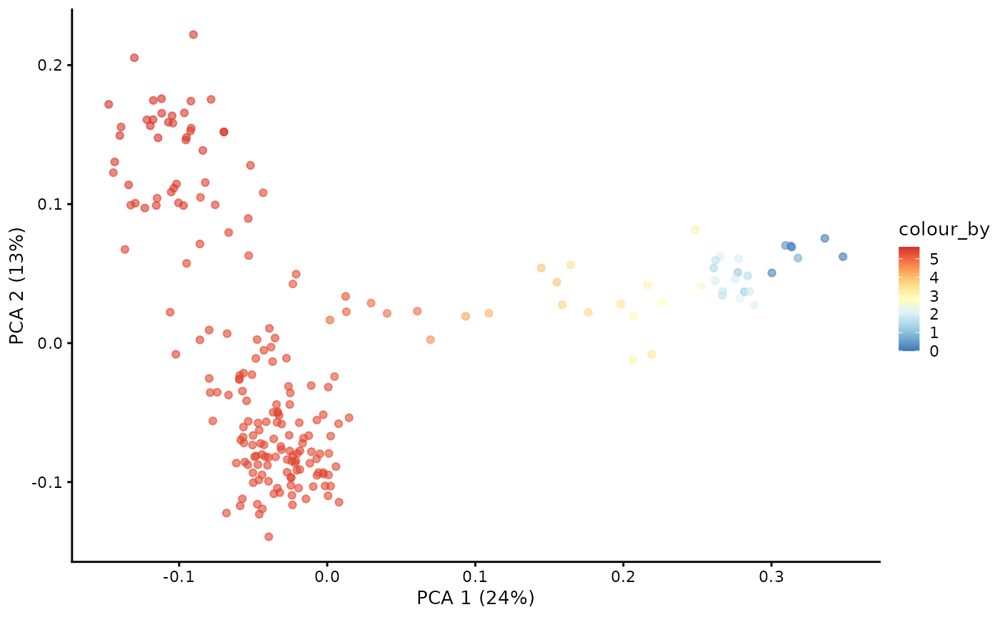
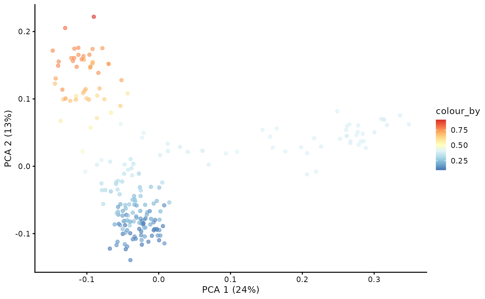
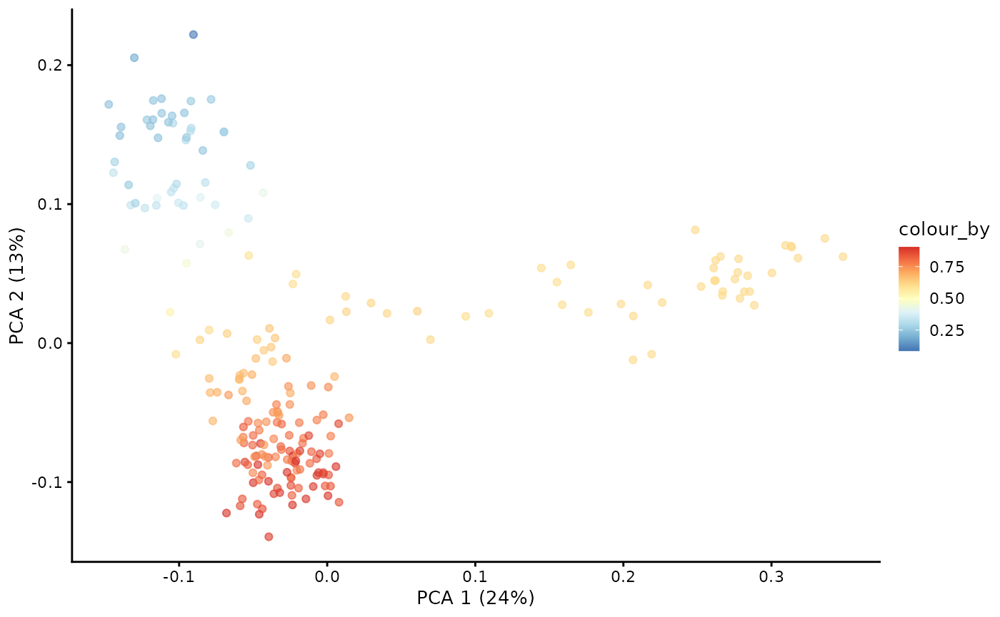
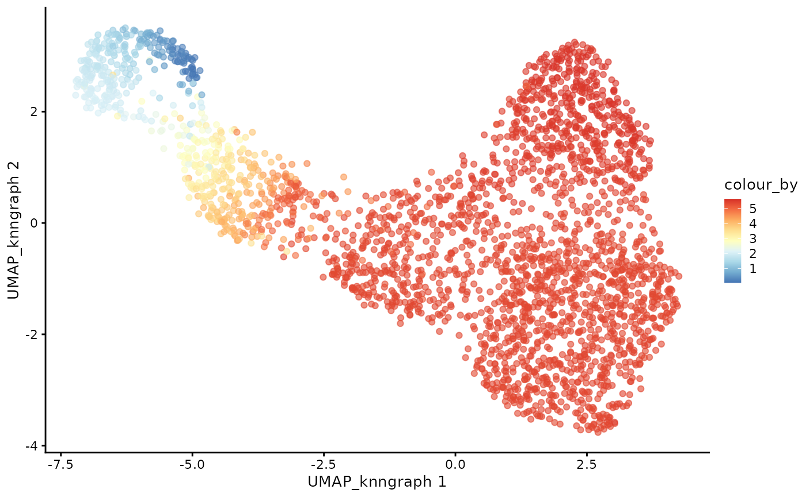
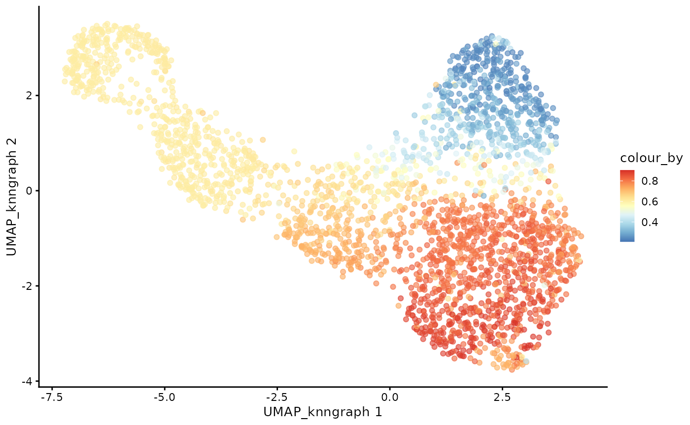
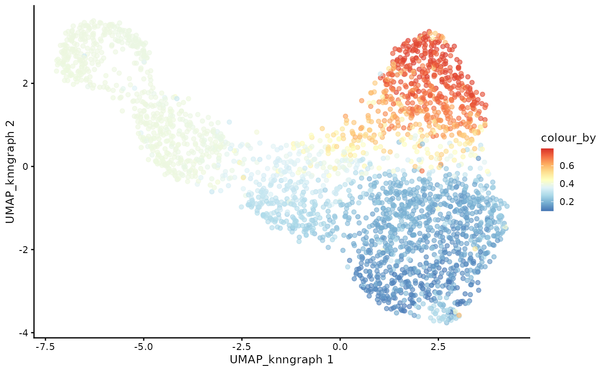

Reproducing the original dandelion method/paper
2024-12-19
vignette_reproduce_original.rmd


In this vignette, we will demonstrate how to perform TCR trajectory
analysis starting from data that has already been processed by
dandelion in python. This is to demonstrate that the
original method/results in the dandelion paper can be
reproduced.
Load data
First, we will load the demo data. This is a down-sampled dataset
from the Suo et al 2024
Nature Biotechnology paper. It contains 10,000 cells with the TCR
information and the dimensionality reduced data (scVI) that we need for
this tutorial. The gene expression matrix is not required for this
tutorial so it is not included in the demo data. We will show in a
separate tutorial how to start with data from
scRepertoire.
data(sce_vdj)We will set the seed so that the plots and results are consistent.
set.seed(100)Filter the data
To begin, we will filter the data and extract the TCR information so that we can construct pseudobulks.
Because the colData of this single-cell object is
populated with the TCR information from dandelion in python
(through this method: dandelion -> anndata
-> anndata2ri, which essentially converts an
AnnData object in python to
SingleCellExperiment in R), we can directly use the
setupVdjPseudobulk function to extract the TCR information
and construct the pseudobulks.
Here, we also need to specify the allowed_chain_status
to keep to the relevant contigs. Default for
allowed_chain_status is NULL, which will keep
all contigs. In the standard R workflow that starts from
scRepertoire, we will assume that all the QC and filtering
has already been handled by scRepertoire.
sce_vdj <- setupVdjPseudobulk(sce_vdj,
already.productive = FALSE,
allowed_chain_status = c("Single pair", "Extra pair", "Extra pair-exception", "Orphan VDJ", "Orphan VDJ-exception")
)We can visualise the UMAP of the filtered data.
plotUMAP(sce_vdj, color_by = "anno_lvl_2_final_clean")
Milo object and neighbourhood graph construction
We will use miloR to create the pseudobulks based on the gene expression data. The goal is to construct a neighbourhood graph with many neighbors with which we can sample the representative neighbours to form the objects.
library(miloR)
traj_milo <- Milo(sce_vdj)
milo_object <- buildGraph(traj_milo, k = 50, d = 20, reduced.dim = "X_scvi")
milo_object <- makeNhoods(milo_object, reduced_dims = "X_scvi", d = 20)
Construct pseudobulked VDJ feature space
Next, we will construct the pseudobulked VDJ feature space using the neighbourhood graph constructed above. We will also run PCA on the pseudobulked VDJ feature space.
pb.milo <- vdjPseudobulk(milo_object, col_to_take = "anno_lvl_2_final_clean")
# pbs = milo_object@nhoods
pb.milo <- runPCA(pb.milo, assay.type = "Feature_space")We can visualise the PCA of the pseudobulked VDJ feature space.
plotPCA(pb.milo, color_by = "anno_lvl_2_final_clean")
TCR trajectory inference using Absorbing Markov Chain
In the original dandelion python package, the trajectory
inference is done using the palantir package. Here, we
implement the absorbing markov chain approach in dandelionR to infer the
trajectory, leveraging on destiny for diffusion map
computation.
Define root and branch tips
library(SingleCellExperiment)
# extract the PCA matrix
pca <- t(as.matrix(reducedDim(pb.milo, type = "PCA")))
# define the CD8 terminal cell as the top-most cell and CD4 terminal cell as the bottom-most cell
branch.tips <- c(which.max(pca[2, ]), which.min(pca[2, ]))
names(branch.tips) <- c("CD8+T", "CD4+T")
# define the start of our trajectory as the right-most cell
root <- which.max(pca[1, ])Construct diffusion map
library(destiny)
# Run diffusion map on the PCA
dm <- DiffusionMap(t(pca), n_pcs = 50, n_eigs = 10)Compute diffussion pseudotime on diffusion map
# the root is automatically called DPT + index of the root cell
DPTroot <- paste0("DPT", root)
# store pseudotime in milo object
pb.milo$pseudotime <- dif.pse[[DPTroot]]
# set the colours for pseudotime
pal <- colorRampPalette(rev((RColorBrewer::brewer.pal(9, "RdYlBu"))))(255)
plotPCA(pb.milo, color_by = "pseudotime") + scale_colour_gradientn(colours = pal)
Markov chain construction on the pseudobulk VDJ feature space
pb.milo <- markovProbability(
milo = pb.milo,
diffusionmap = dm,
terminal_state = branch.tips,
root_cell = root,
pseudotime_key = "pseudotime"
)Visualising branch probabilities
With the Markov chain probabilities computed, we can visualise the branch probabilities towards CD4+ or CD8+ T-cell fate on the PCA plot.
plotPCA(pb.milo, color_by = "CD8+T") + scale_color_gradientn(colors = pal)
plotPCA(pb.milo, color_by = "CD4+T") + scale_color_gradientn(colors = pal)
Transfer
The next step is to project the pseudotime and the branch probability information from the pseudobulks back to each cell in the dataset. If the cell do not belong to any of the pseudobulk, it will be removed. If a cell belongs to multiple pseudobulk samples, its value should be calculated as a weighted average of the corresponding values from each pseudobulk, where each weight is inverse of the size of the pseudobulk.
Project pseudobulk data to each cell
cdata <- projectPseudotimeToCell(milo_object, pb.milo, branch.tips)Visualise the trajectory data on a per cell basis
plotUMAP(cdata, color_by = "anno_lvl_2_final_clean", dimred = "UMAP_knngraph")
plotUMAP(cdata, color_by = "pseudotime", dimred = "UMAP_knngraph") + scale_color_gradientn(colors = pal)
plotUMAP(cdata, color_by = "CD4+T", dimred = "UMAP_knngraph") + scale_color_gradientn(colors = pal)
plotUMAP(cdata, color_by = "CD8+T", dimred = "UMAP_knngraph") + scale_color_gradientn(colors = pal)
And that’s it! We have successfully inferred the trajectory of the T-cells in this dataset!
Session info
## R version 4.4.2 (2024-10-31)
## Platform: x86_64-pc-linux-gnu
## Running under: Ubuntu 22.04.5 LTS
##
## Matrix products: default
## BLAS: /usr/lib/x86_64-linux-gnu/openblas-pthread/libblas.so.3
## LAPACK: /usr/lib/x86_64-linux-gnu/openblas-pthread/libopenblasp-r0.3.20.so; LAPACK version 3.10.0
##
## locale:
## [1] LC_CTYPE=C.UTF-8 LC_NUMERIC=C LC_TIME=C.UTF-8
## [4] LC_COLLATE=C.UTF-8 LC_MONETARY=C.UTF-8 LC_MESSAGES=C.UTF-8
## [7] LC_PAPER=C.UTF-8 LC_NAME=C LC_ADDRESS=C
## [10] LC_TELEPHONE=C LC_MEASUREMENT=C.UTF-8 LC_IDENTIFICATION=C
##
## time zone: UTC
## tzcode source: system (glibc)
##
## attached base packages:
## [1] stats4 stats graphics grDevices utils datasets methods
## [8] base
##
## other attached packages:
## [1] destiny_3.20.0 miloR_2.2.0
## [3] edgeR_4.4.1 limma_3.62.1
## [5] scater_1.34.0 ggplot2_3.5.1
## [7] scuttle_1.16.0 SingleCellExperiment_1.28.1
## [9] SummarizedExperiment_1.36.0 Biobase_2.66.0
## [11] GenomicRanges_1.58.0 GenomeInfoDb_1.42.1
## [13] IRanges_2.40.1 S4Vectors_0.44.0
## [15] BiocGenerics_0.52.0 MatrixGenerics_1.18.0
## [17] matrixStats_1.4.1 dandelionR_0.99.0
## [19] BiocStyle_2.34.0
##
## loaded via a namespace (and not attached):
## [1] vcd_1.4-13 RColorBrewer_1.1-3 jsonlite_1.8.9
## [4] magrittr_2.0.3 ggbeeswarm_0.7.2 farver_2.1.2
## [7] rmarkdown_2.29 fs_1.6.5 zlibbioc_1.52.0
## [10] ragg_1.3.3 vctrs_0.6.5 memoise_2.0.1
## [13] htmltools_0.5.8.1 S4Arrays_1.6.0 curl_6.0.1
## [16] BiocNeighbors_2.0.1 SparseArray_1.6.0 Formula_1.2-5
## [19] TTR_0.24.4 sass_0.4.9 pracma_2.4.4
## [22] bslib_0.8.0 htmlwidgets_1.6.4 desc_1.4.3
## [25] zoo_1.8-12 cachem_1.1.0 igraph_2.1.2
## [28] lifecycle_1.0.4 pkgconfig_2.0.3 rsvd_1.0.5
## [31] Matrix_1.7-1 R6_2.5.1 fastmap_1.2.0
## [34] GenomeInfoDbData_1.2.13 digest_0.6.37 numDeriv_2016.8-1.1
## [37] pcaMethods_1.98.0 colorspace_2.1-1 patchwork_1.3.0
## [40] RSpectra_0.16-2 irlba_2.3.5.1 textshaping_0.4.1
## [43] beachmat_2.22.0 labeling_0.4.3 fansi_1.0.6
## [46] httr_1.4.7 polyclip_1.10-7 abind_1.4-8
## [49] compiler_4.4.2 proxy_0.4-27 withr_3.0.2
## [52] BiocParallel_1.40.0 carData_3.0-5 viridis_0.6.5
## [55] hexbin_1.28.5 knn.covertree_1.0 ggforce_0.4.2
## [58] MASS_7.3-61 DelayedArray_0.32.0 scatterplot3d_0.3-44
## [61] bluster_1.16.0 gtools_3.9.5 tools_4.4.2
## [64] lmtest_0.9-40 ranger_0.17.0 vipor_0.4.7
## [67] ggplot.multistats_1.0.1 beeswarm_0.4.0 nnet_7.3-19
## [70] glue_1.8.0 grid_4.4.2 cluster_2.1.6
## [73] generics_0.1.3 gtable_0.3.6 class_7.3-22
## [76] tidyr_1.3.1 data.table_1.16.4 BiocSingular_1.22.0
## [79] tidygraph_1.3.1 ScaledMatrix_1.14.0 sp_2.1-4
## [82] car_3.1-3 utf8_1.2.4 XVector_0.46.0
## [85] ggrepel_0.9.6 pillar_1.9.0 stringr_1.5.1
## [88] spam_2.11-0 RcppHNSW_0.6.0 VIM_6.2.2
## [91] robustbase_0.99-4-1 dplyr_1.1.4 tweenr_2.0.3
## [94] lattice_0.22-6 smoother_1.3 tidyselect_1.2.1
## [97] locfit_1.5-9.10 knitr_1.49 gridExtra_2.3
## [100] xfun_0.49 graphlayouts_1.2.1 statmod_1.5.0
## [103] DEoptimR_1.1-3-1 stringi_1.8.4 UCSC.utils_1.2.0
## [106] yaml_2.3.10 boot_1.3-31 evaluate_1.0.1
## [109] codetools_0.2-20 laeken_0.5.3 RcppEigen_0.3.4.0.2
## [112] ggraph_2.2.1 tibble_3.2.1 BiocManager_1.30.25
## [115] cli_3.6.3 uwot_0.2.2 systemfonts_1.1.0
## [118] munsell_0.5.1 jquerylib_0.1.4 Rcpp_1.0.13-1
## [121] parallel_4.4.2 pkgdown_2.1.1 dotCall64_1.2
## [124] ggthemes_5.1.0 viridisLite_0.4.2 xts_0.14.1
## [127] scales_1.3.0 e1071_1.7-16 purrr_1.0.2
## [130] crayon_1.5.3 rlang_1.1.4 cowplot_1.1.3